Welcome to the Gallery!
The Gallery serves as a central collection of official artwork, promotional images, videos, and music from Fire Emblem: Three Houses that highlight the Blue Lions route and its characters. While many of these images and videos also appear throughout other sections of the website to support character profiles and story summaries, this page brings them together into a single, easily accessible location for visitors who wish to browse the media without navigating multiple pages. In addition to character artwork and screenshots, the Gallery features official trailers and selections from the game's soundtrack to provide a more immersive experience and further showcase the world of Fódlan. All official media is displayed for educational and informational purposes, with ownership remaining with Nintendo, Intelligent Systems, and their respective copyright holders.
Official Artwork
The images featured throughout this gallery capture the characters, landscapes, and atmosphere of Fire Emblem: Three Houses. From detailed character portraits and concept artwork to scenic locations across Fódlan, each image highlights the artistic style and world-building that define the game. Together, these visuals provide a closer look at the people and places that shape the Blue Lions' journey while complementing the information found throughout the website.
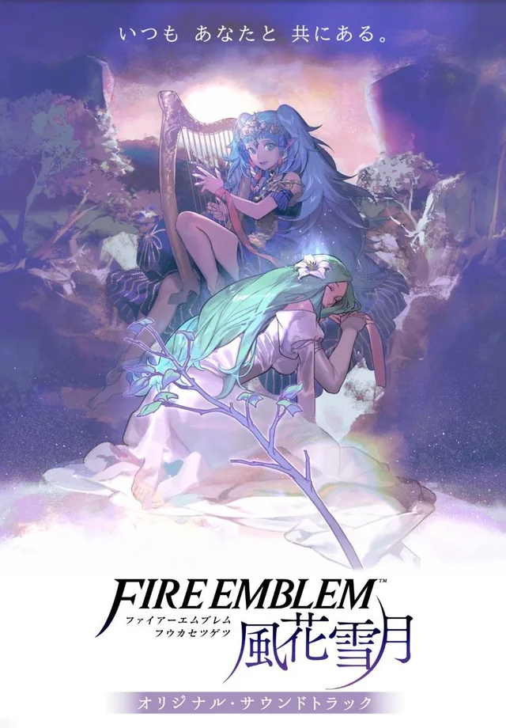
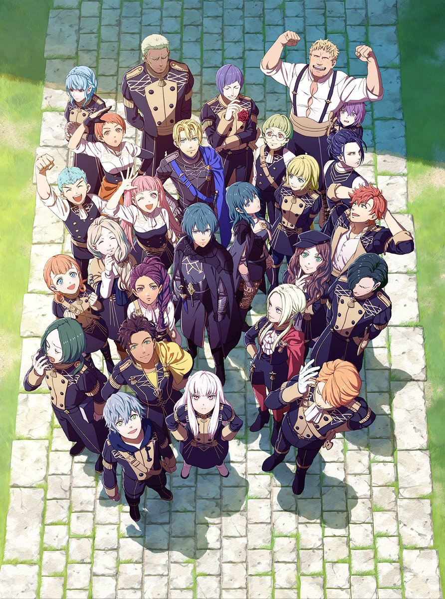
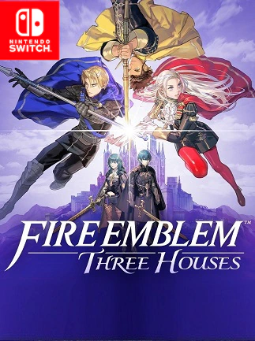
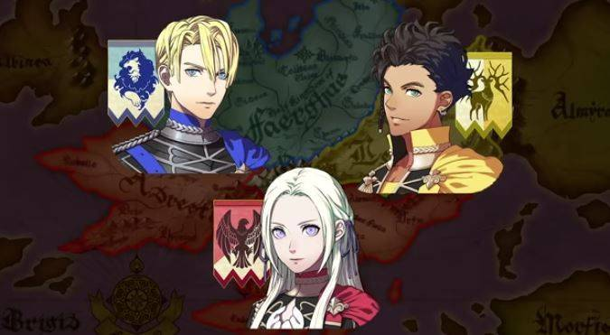
Concept Images
This section highlights early visual development for Fire Emblem: Three Houses. These concept images focus on Byleth's character designs and show how the game's artwork helped establish the look and tone of its main cast before release.
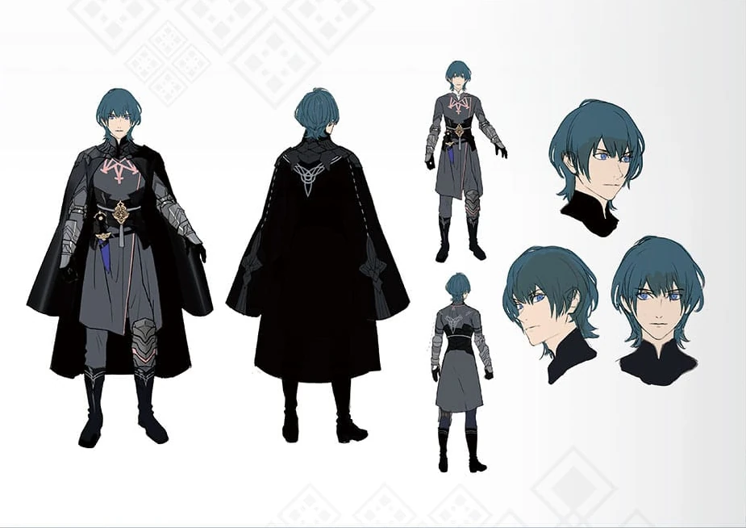
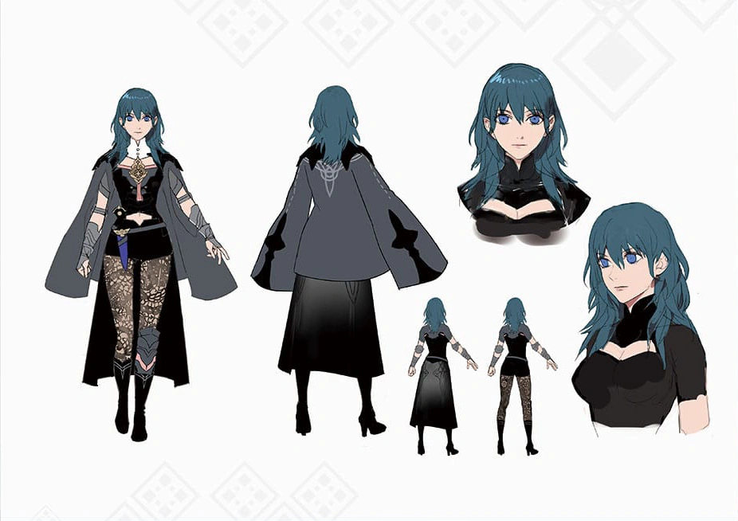
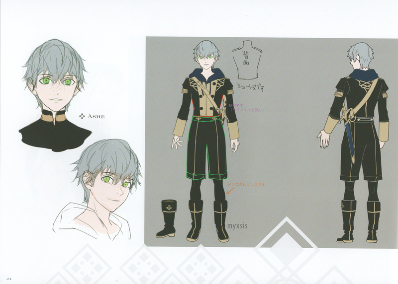
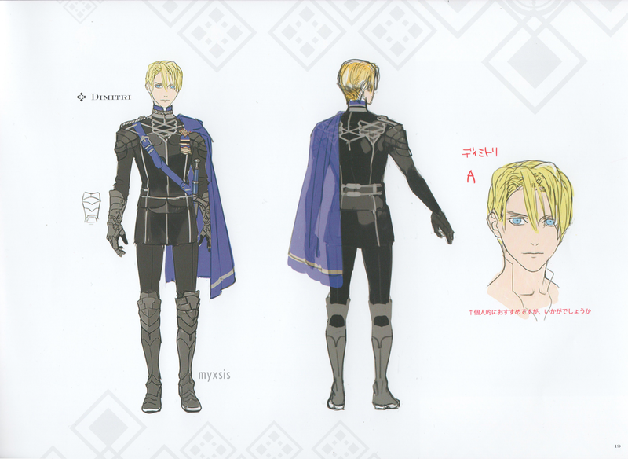
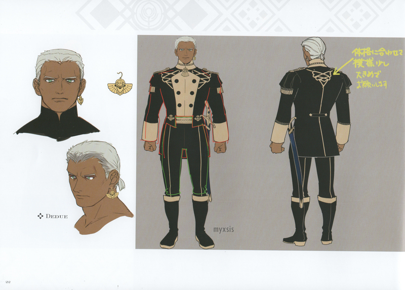
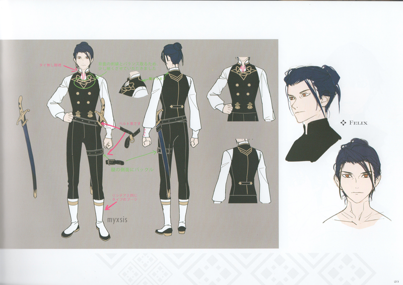
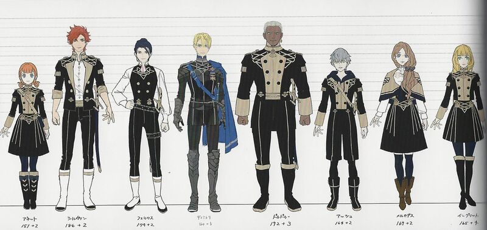
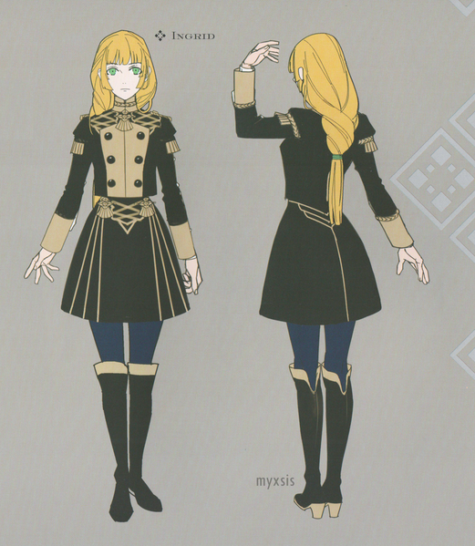
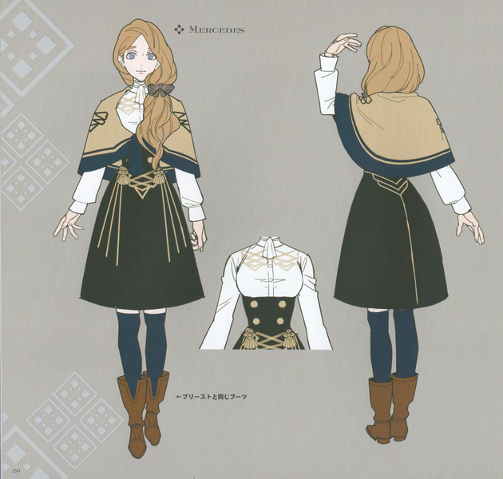
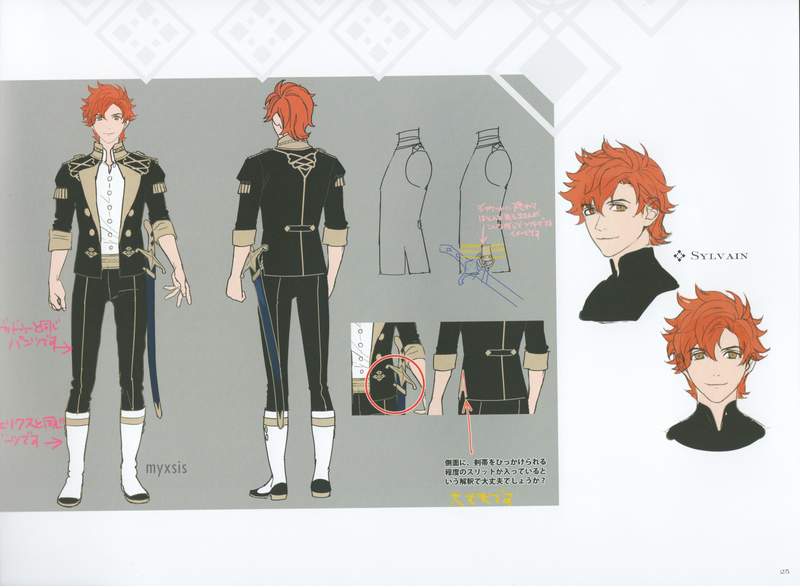
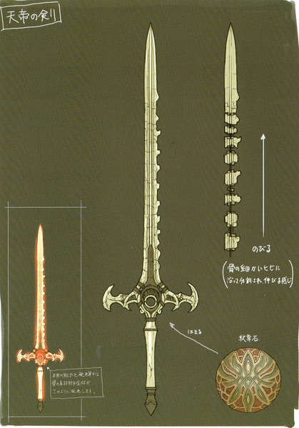
Videos
The videos in this gallery showcase gameplay, animated cutscenes, and official trailers from Fire Emblem: Three Houses. These clips provide a dynamic look at the game's storytelling, combat, and character interactions, allowing visitors to experience memorable moments beyond static images. Whether highlighting pivotal scenes or introducing the world of Fódlan, each video offers additional context and brings the Blue Lions' journey to life.